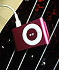

元々ガジェット好きじゃないし、財布やケータイだって持ち歩くのかったるいし、ギター弾くのにピック持つのもダメだってくらいなので、iPodはかっこいいなあと思っても自分が使う事になるとは全然思ってなかったのだけれど。
実際動かしてみると、回転音や振動も何もないのに音楽が聴こえてくるのってちょっと不思議。ディスクプレーヤーやテレコやパソコンに慣れちゃってるからねえ…。
近くの家電量販店でなかば思いつきで買ったのだが、話をきくとShuffleはiPodの中ではそれほど人気はないのだそうで、その中でも「どの色がよく売れてます？」ときいたら「白やシルバー、売れないのはピンクとか緑とか」という答えだったので、迷わずピンクを選択＾＾
僕の場合は自分のレパートリーを入れて折りに触れて耳に入れるためなので100曲も入れば十分。
これで次回のお勤めが楽しみになってきた(爆